Atributele etichetei table
1)Atributul align
Atributul align="valoare" are rolul de a seta modul de aliniere a tabelului in pagina web fata de
celelalte elemente din pagina. Valorile valide pentru atributul align sunt:
- align="left"
- align="right"
- align="center"
Valoarea "left" plaseaza tabelul in stanga paginii urmand ca textul si alte elemente sa fie pozitionate
la dreapta paginii. Valoarea "right" determina plasarea tabelului in dreapta paginii, toate celelalte
elemente pozitionandu-se in stanga tabelului. In cazul in care align are ca valoare "center" atunci
tabelul va fi plasat in centrul paginii iar celelalte elemente il vor incadra deasupra si dedesubt.
In continuare sunt ilustrate modurile in care un tabel poate fi aliniat in pagina web fata de text
cu ajutorul valorilor atributului align:
Exemplul 1-un tabel aliniat la stanga
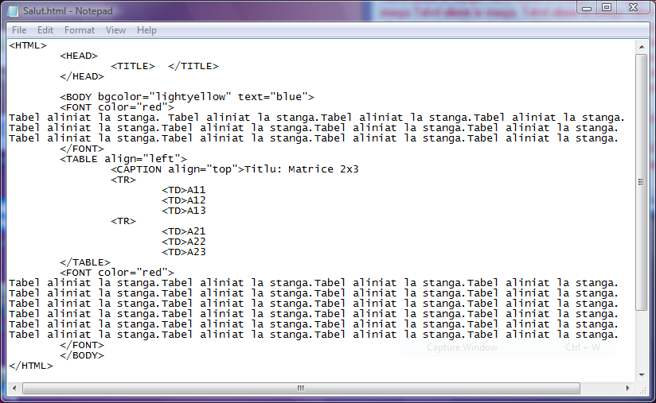
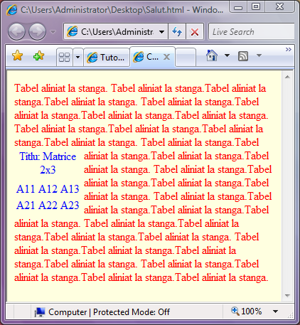
Exemplul 2 -un tabel aliniat la dreapta
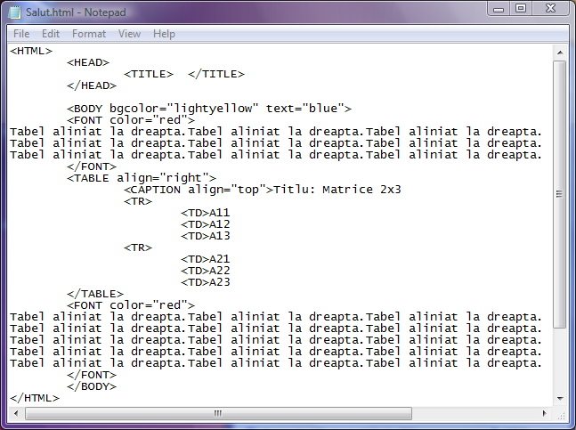
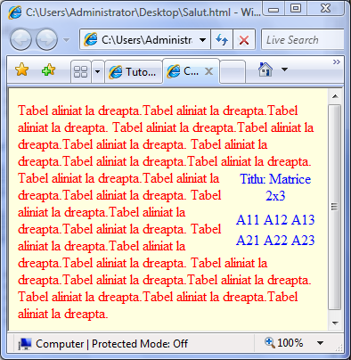
Exemplul 3-un tabel aliniat la centru
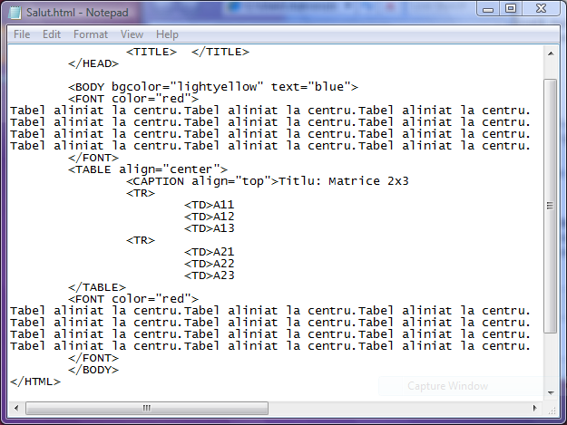
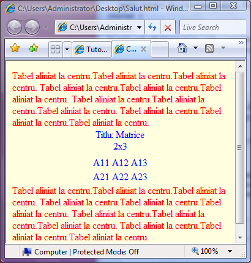
2)Atributul border
Atributul border seteaza chenarul tabelului, avand ca valoare un numar natural ce reprezinta
grosimea chenarului exprimata in pixeli... De exemplu border="5" seteaza o grosime a chenarului
de 5 pixeli in timp ce border="0" semnifica faptul ca tabelul nu are chenar.
Iata un exemplu de tabel cu chenar....click pe cod pentru a vedea pagina web...
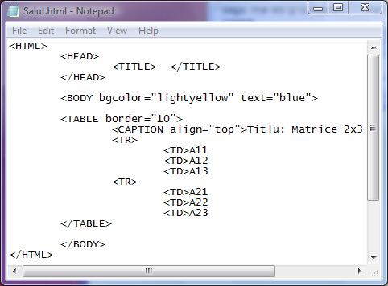
Observatie: daca in eticheta TABLE se editeaza atributul border fara nicio valoare, atunci tabelul
va avea chenarele de grosime egala cu 1 pixel...
3)Atributul bordercolor
Atributul bordercolor seteaza culoarea chenarului si are ca valori sau denumirea unor culori
valide in limba engleza sau o culoare exprimata prin codul ei hexazecimal cu sintaxa "#RRGGBB", asemeni
setarilor pentru fundalul paginii web sau pentru culoarea fonturilor.
Pentru a atribui culoare verde chenarului tabelului de mai sus, vom modifica codul sursa ca in figura
de mai jos(click pe cod pentru a vedea pagina web):
4)Atributul cellspacing
Atributul cellspacing seteaza distantele dintre celulele tabelului... Valoarea atributului
cellspacing este un numar pozitiv, reprezentand distanta dintre doua celule exprimata in pixeli...
Iata in continuare codul sursa pentru ca tabelul anterior sa aiba distantele dintre celule de 20 pixeli
(click pe cod petrui a deschide pagina web):
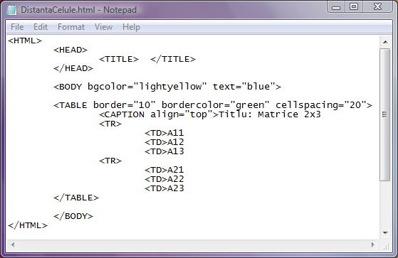
5)Atributul background
Atributul background are ca valoare adresa unui fisier imagine si va seta acea imagine ca fundal pentru tabel.
In continuare va fi prezentat codul sursa pentru un tabel cu imagine de fundal (click pe codul sursa pentru
a deschide pagina web).
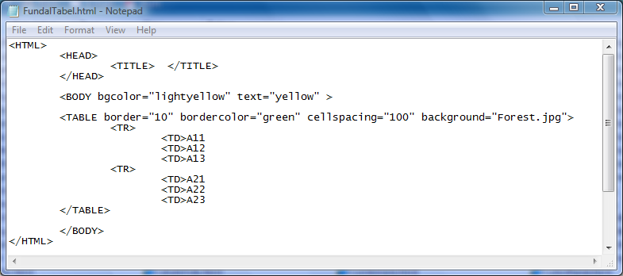
6)Atributul cellpadding
Atributul cellpadding are ca valori numere pozitive, reprezentand distanta in pixeli dintre continutul
si marginile celulelor. Mai jos se poate vedea codul pentru un tabel in care s-a setat aceasta distanta la 30
de pixeli(click pe cod pentru a deschide pagina web).
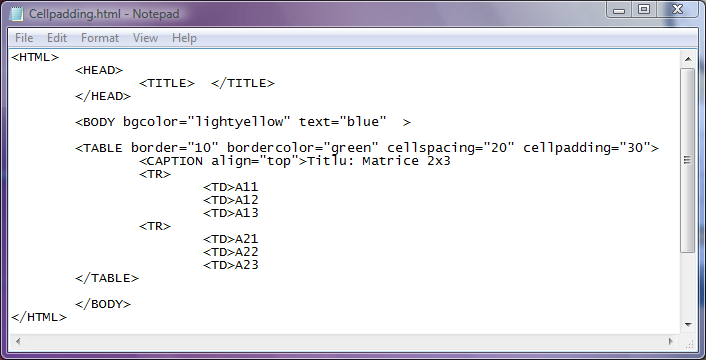
7)Atributul frame
Atributul frame seteaza chenarele exterioare ale tabelului. Valorile atributului frame sunt:
"void"- fara chenar exterior
"above- doar chenarul orizontal de deasupra tabelului
"below"- doar chenarul orizontal de dedesubt
"lhs"- doar chenarul vertical stang
"rhs"- doar chenarul vertical drerpt
"hsides"- doar liniile de chenar orizontale, de deasupra si dedesubt
"vsides"- doar liniile de chenar verticale, din stanga si dreapta tabelului
"box"- toate liniile de chenar exterior
Exemplul 1-Tabel fara chenare exterioare
Exemplul 2-Tabel doar cu chenar deasupra
Exemplul 3-Tabel doar cu chenar dedesubt
Exemplul 4-Tabel doar cu chenar la stanga
Exemplul 5-Tabel doar cu chenar la dreapta
Exemplul 6-Tabel doar cu chenarele orizontale
Exemplul 7-Tabel doar cu chenarele verticale
Exemplul 8-Tabel cu toate chenarele
...pentru a citi codul sursa al exemplelor de mai sus, maximizati fereastra Internet Explorer,
click pe Page de pe bara de instrumente a browserului si selectati optiunea View Source.
8)Atributul rules
Atributul rules seteaza prin valorile sale chenarele interioare ale tabelului. Valorile acestui atribut pot
fi:
"none"-fara chenare interioare
"rows"- doar chenarele orizontale
"cols"- doar chenarele verticale
"all"- toate chenarele interioare
Exemplul 1-Tabel fara chenare interioare
Exemplul 2-Tabel cu chenare interioare orizontale
Exemplul 3-Tabel cu chenare interioare verticale
Exemplul 4-Tabel cu toate chenarele interioare
9)Atributul width
Atributul width seteaza latimea tabelului. Valorile pentru width pot fi numere pozitive ce
reprezinta latimea tabelului exprimata in pixeli sau printr-un procent din fereastra browserului.
Daca latimea este mai mica decat necesarul pentru tabel, atunci acesta isi va mari automat
latimea pentru a afisa corect continutul celulelor.
Exemplul 1-Tabel cu latimea de 200 pixeli
Exemplul 2-Tabel cu latimea de 500 pixeli
10)Atributul height
Atributul height stabileste inaltimea tabelului. Valorile sale pot fi numere pozitive, reprezentand inaltimea
tabelului exprimata in pixeli.
Exemplul 1-Tabel cu inalimea de 200 pixeli
Exemplul 2-Tabel cu inalimea de 500 pixeli
11)Atributul bgcolor
Atributul bgcolor are ca valori fie o denumire valida de culoare, fie codul hexazecimal al unei
culori cu sintaxa "#RRGGBB", culoare ce va umple fundalul tabelului. Iata un exemplu de utilizare
a atributului bgcolor... click pe cod pentru a vedea pagina web...
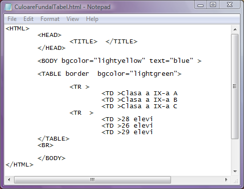
Inapoi la Tabele...